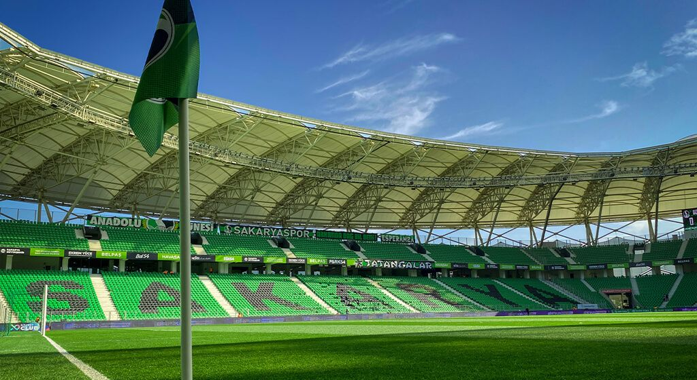
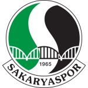
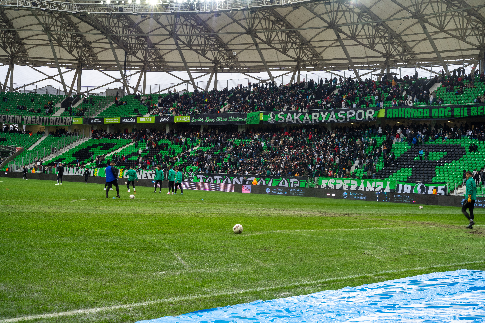

Yeşil Siyah Bir Sevda: Sakaryaspor
Anadolu'nun futbol fabrikası, şehrin en büyük markası ve bitmeyen tutkusu.
Tarihçe: Bir Şehrin Uyanışı (1965)
Sakaryaspor, şehrin önde gelen kulüpleri olan İdman Yurdu, Ada Gençlik, Gençler Birliği ve Güneşspor'un birleşmesiyle 17 Haziran 1965 tarihinde resmen kurulmuştur. Kulübün kurucu başkanı Ethem Boran'dır.
Kuruluşunun ardından hızla yükselişe geçen takım, Türk futboluna kazandırdığı sayısız yetenekle "Futbol Fabrikası" ünvanını almış; Aykut Kocaman, Oğuz Çetin, Tuncay Şanlı ve Hakan Şükür gibi Türk futbol tarihine damga vuran yıldızları yetiştirmiştir.


Renklerin Anlamı ve Amblem
Kulübün renkleri olan Yeşil ve Siyah özel bir anlama sahiptir. Yeşil, Sakarya'nın eşsiz doğasını ve verimli topraklarını temsil ederken; Siyah, o dönemlerde Sakarya Nehri'nin taşması sonucu yaşanan afetlerdeki hüznü ve acıyı simgelemektedir.
Kulübün amblemi, Sakarya köprüsünün iki yakasını birleştiren ayaklarından ve üzerinden akan Sakarya Nehri'nden ilham alınarak tasarlanmıştır.
Mabedimiz ve Rüstemler Tesisleri
Uzun yıllar Sakarya Atatürk Stadyumu'nda destanlar yazan takımımız, günümüzde maçlarını UEFA standartlarındaki modern Yeni Sakarya Atatürk Stadyumu'nda oynamaktadır (Kapasite: 28.154).
Sakaryaspor'un kalbi ise 1989 yılında hizmete açılan Rüstemler Tesisleri'dir. Birçok efsane futbolcunun ter döktüğü bu tesisler, kulübün altyapı ve A takım çalışmalarının merkezidir.
Kupa ve Avrupa Başarıları
Türkiye Kupası Zaferi (1987-1988)
Sakaryaspor, 1987-1988 sezonunda Federasyon Kupası (Türkiye Kupası) finalinde Samsunspor'u mağlup ederek kupayı müzesine götürmüştür. Anadolu'dan çıkarak bu kupayı kazanma başarısı gösteren ender kulüplerden biri olma gururunu şehre yaşatmıştır.
Avrupa Macerası (Kupa Galipleri Kupası)
Türkiye Kupası şampiyonu apoletiyle Avrupa Kupa Galipleri Kupası'nda ülkemizi temsil etme hakkı kazanmıştır. Macaristan'ın Békéscsaba takımı ve Almanya'nın güçlü temsilcisi Eintracht Frankfurt ile oynadığı maçlarla şehrin adını Avrupa'ya duyurmuştur.
Tribünün Gücü: Tatangalar

1990 yılında kurulan "Tatangalar", Türkiye'nin en bilinen ve en ateşli taraftar gruplarından biridir. Sadece bir maç izleyici grubu değil, aynı zamanda şehrin sosyal dokusunda önemli rol oynayan, kan bağışı ve deprem yardım kampanyaları düzenleyen, takımını "İyi günde, kötü günde" asla yalnız bırakmayan dev bir ailedir.
"Bu Sevda Bitmez" sloganıyla yağmur çamur, deplasman demeden takımlarının peşinden koşan Tatangalar, koreografileri ve bitmek bilmeyen enerjileriyle Türk futbol kültürüne büyük bir miras bırakmışlardır.